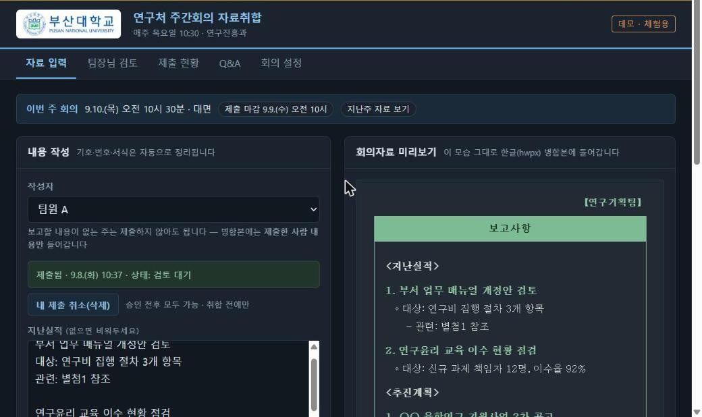
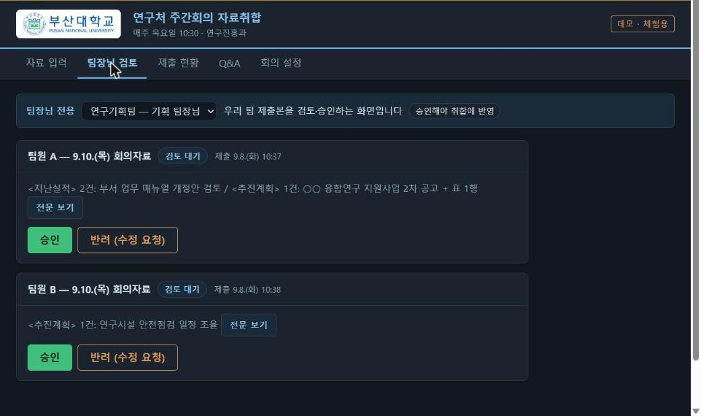
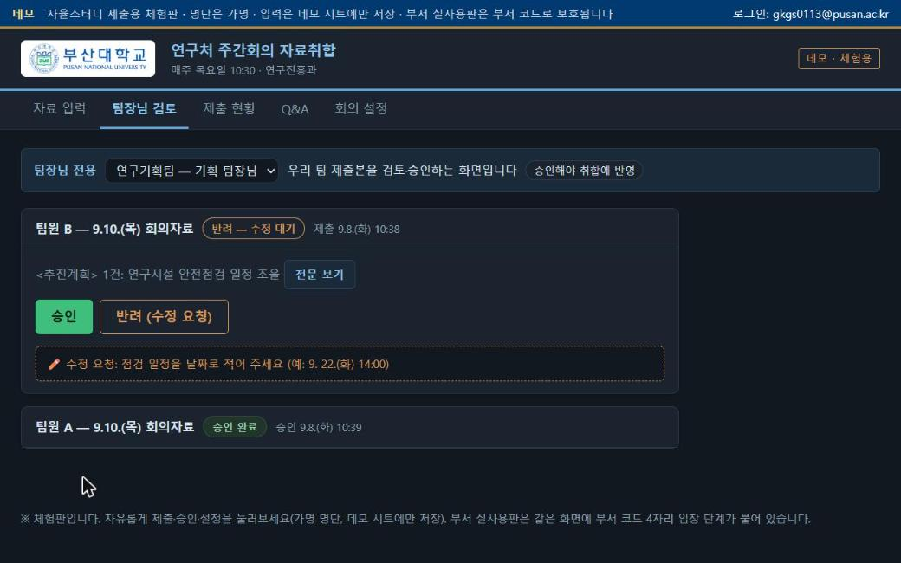
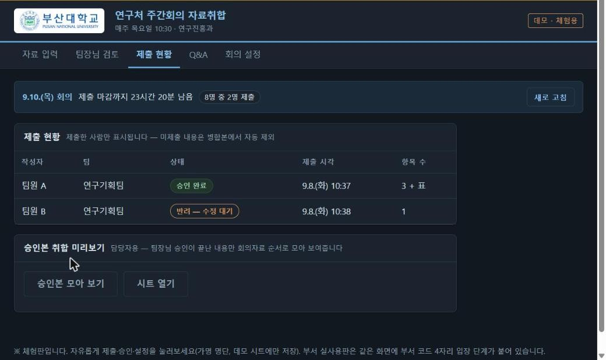
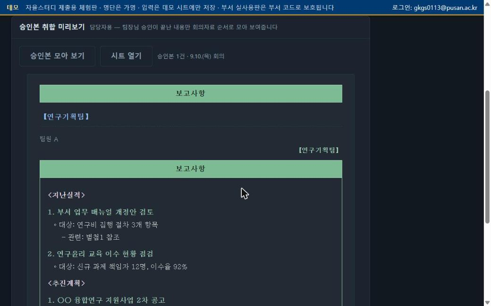

▸ 체험판 바로 열기: 연구처 주간회의 자료취합 — 데모 → 로그인 없이 열립니다. 명단은 가명(팀원 A~H)이고 입력은 데모 시트에만 저장되므로 자유롭게 제출·승인·설정을 눌러보셔도 됩니다.
연구진흥과는 매주 목요일 주간회의를 합니다. 자료는 회의 전날 오전 10시까지 팀원들이 각자 메일로 보내고, 담당자가 한글 파일 하나로 합칩니다.
규칙이 분명하고 매주 반복되는 일이라 "작은 업무 에이전트"의 첫 소재로 골랐습니다. 1·2주차의 규정 Q&A 봇, 공고 수집봇과 같은 원칙(무료·계정 무관·브라우저)으로 만들었습니다.
작성자를 고르고 지난실적·추진계획을 평문으로 적으면 오른쪽에 한글 병합본과 같은 모양으로 정리됩니다. 빈 줄로 항목을 나누고, "관련:"으로 시작하면 들여쓰기 — 규칙은 이 둘뿐입니다. 표(과제 목록 등)는 필요할 때만 열·행을 추가하고 연번·합계는 자동입니다.
팀별로 제출본이 카드로 뜹니다. 승인하면 취합 대상이 되고, 반려하면 수정 요청 메모가 저장되어 작성자 입력 화면에 그대로 표시됩니다. 메일을 따로 보낼 필요가 없습니다.
마감까지 남은 시간, 제출 인원, 각자의 상태(검토 대기·승인 완료·반려·지각)가 표로 보입니다. 담당자는 승인본 모아 보기로 회의자료 순서대로 합쳐진 초안을 바로 확인합니다.
회의 일시·제출 마감·대면/서면/취소를 담당자가 저장하면 모든 사람의 화면(상단 안내줄, 제출 버튼의 지각 전환 시점)에 즉시 반영됩니다.

제출하면 상단에 "제출됨 · 시각 · 상태"가 표시되고, 승인 전까지 다시 제출하면 이전 내용을 덮어씁니다. 내 제출 취소도 가능합니다.




화면은 모두 체험판(가명 명단·예시 내용)입니다. 부서 실사용판은 같은 화면에 부서 코드 4자리 입장 단계가 붙어 있고 실명 명단을 씁니다.
| 항목 | 구현 |
|---|---|
| 화면 | HTML 한 장(탭 5개). 입력 → 미리보기 변환은 브라우저에서 규칙 기반으로 처리(AI 미사용) |
| 서버 | Apps Script 함수 11개 — 코드 확인, 제출/재제출, 불러오기, 취소, 현황, 검토 목록, 승인/반려, 승인본 취합, 설정 읽기/저장 |
| 저장 | 시트 「제출」 17열(회의일·작성자·팀·상태·시각·본문·표·반려메모·미리보기HTML 등). 회의일+작성자를 키로 덮어쓰기. 동시 제출은 잠금으로 보호 |
| 접근 | 웹앱은 "모든 사용자"로 열되, 첫 화면에서 부서 코드 4자리를 서버가 확인해야 명단·입력 화면이 열림(기기에 기억). 체험판은 코드 없이 열리는 별도 배포 |
| 모든 서버 호출 | 부서 코드를 함께 보내 서버가 매번 재검증 |
1회차 규정 Q&A 봇에서 배운 대로, 기능보다 "모두가 열 수 있는가"를 먼저 확인했습니다. 첫 배포는 "부산대 계정 사용자만" 접근으로 했는데 PC에서는 열렸지만 휴대폰에서는 학교 로그인과 웹앱 화면이 서로 넘겨주기를 반복해 열리지 않았습니다.
| 배포 방식 | PC 크롬 | 휴대폰 크롬 | 카카오톡 안에서 | 판정 |
|---|---|---|---|---|
| 학교 계정 사용자만 | 열림 | 로그인 반복, 열리지 않음 | 파일을 열 수 없음 | 폐기 |
| 모든 사용자 + 부서 코드 | 열림 | 열림 | 열림 | 채택 |
| 구분 | Before | After |
|---|---|---|
| 제출 | 메일에 각자 서식으로 | 브라우저에서 입력, 서식은 자동 통일 |
| 검토 | 팀장님이 메일로 확인·회신 | 화면에서 승인/반려, 수정 요청은 작성자 화면에 표시 |
| 현황 | 메일함을 뒤져 확인 | 제출 현황 표 + 마감 카운트다운 |
| 취합 | 사람이 한글 파일에 옮겨 붙임 | 승인본을 회의자료 순서로 자동 모음(초안) |
| 접속 | — | PC·휴대폰·카카오톡 모두 확인 |
다음 계획: ① 승인본을 한글(hwpx) 병합본 파일로 자동 생성(현재는 화면 초안) ② 별첨 파일 업로드(지금은 파일명만 기록, 파일은 메일로) ③ 수요일 마감 전 리마인드. 부서에서는 기존 메일 취합과 병행하며 첫 피드백을 받는 중입니다.